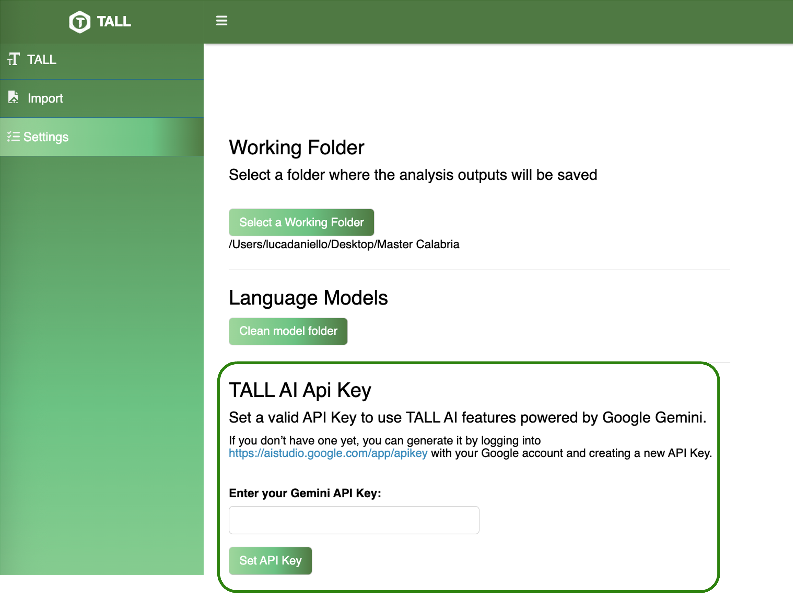
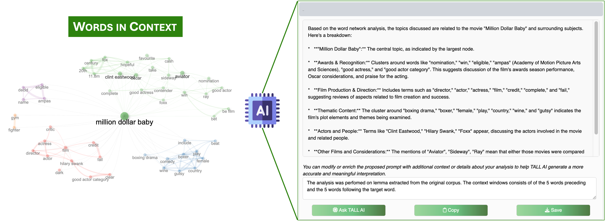

TALL AI is the intelligent core of the TALL platform — a virtual assistant powered by state-of-the-art large language models (LLMs), seamlessly integrated to enhance every stage of your text analysis workflow.
More than just an add-on, TALL AI serves as an interpretative layer between analytical results and human understanding. It helps users — especially those without programming or statistical expertise — to make sense of complex outputs and uncover actionable insights from their data.
🔍 What Can TALL AI Do?
TALL AI supports users by delivering:
- 🧠 Automated interpretation of statistical indicators, lexical patterns, and clustering structures
- 💬 Critical discussion prompts, suggesting meaningful hypotheses and encouraging reflection on emerging patterns
- 🔍 Conceptual guidance in modules such as topic modeling, sentiment and polarity analysis, lexical correspondence analysis, and network clustering
- 🧾 Natural language summaries of results and dashboards, written in clear and domain-relevant terms
Whether you’re working with news articles, tweets, abstracts, or long-form reports, TALL AI helps translate results into knowledge — without requiring technical configuration.
🛠️ How It Works
TALL AI connects directly to Google Gemini, allowing users to access advanced language models with minimal setup.
To activate TALL AI:
- Visit Google Studio AI
- Generate a free API key
- Paste the key into the TALL settings panel

Once enabled, TALL AI becomes available across analysis modules and automatically contextualizes your results as you explore.
Why Use TALL AI? - Interpreting Text, Intelligently 🚀
TALL AI empowers users to:
- Go beyond charts and tables with narrative interpretations
- Avoid misinterpretation by receiving guided suggestions
- Save time by summarizing complex outputs automatically
- Improve communication of results in reports, presentations, and discussions

Whether you are exploring thematic structures, investigating sentiment dynamics, or comparing clusters, TALL AI becomes your analytical companion — turning data into direction.
🎯 Key Capabilities
TALL AI enhances the interpretability of textual data by offering intelligent, context-aware support across all stages of analysis.
In the early phases, it assists with descriptive and lexical exploration, highlighting anomalies in vocabulary distribution, interpreting levels of lexical diversity and concentration, and identifying dominant linguistic patterns — such as domain-specific jargon or repetitive structures.
When working with topic modeling and clustering, TALL AI automatically suggests clear, meaningful labels for emergent topics and clusters. It links these structures to broader conceptual themes, while also detecting semantic overlaps or drifts that may occur across time, text genres, or author groups.
In network analysis, TALL AI interprets structural metrics such as density, modularity, and centrality. It helps users understand the organization of semantic communities and pinpoints key connectors or bridging terms between different conceptual areas.
In the context of sentiment and polarity detection, TALL AI provides narrative explanations of sentiment trends, clarifies the role of polarized terms within specific contexts, and draws attention to valence shifters or emotional dynamics present in the text.
In each of these areas, TALL AI transforms numerical output into actionable interpretation — enabling more confident, insightful, and communicable results.
🧪 Example Use Cases
- A linguist uses TALL AI to interpret co-occurrence networks from literary texts
- A social scientist receives AI-assisted summaries of clusters in political discourse
- A student explores AI-generated commentary on the sentiment polarity of tweets
- A researcher reflects on LDA outputs with labels and hypotheses suggested by TALL AI
🔍 Why Use TALL AI?
| ❌ Without TALL AI | ✅ With TALL AI |
|---|---|
| 📉 Raw tables and graphs | 🧠 Interpreted patterns and conceptual summaries |
| 📊 Technical statistics | 🧾 Explained indicators in plain language |
| 🧩 Trial-and-error topic labeling | 🏷️ Suggested and consistent cluster/topic labels |
| 🕵️♂️ Manual result interpretation | 💬 Guided reasoning and contextual insights |
🔒 Privacy and Transparency
- No textual content is stored or reused by TALL AI
- API usage is always local and user-controlled
- Interpretations are suggestions, not deterministic outputs!!!
All interactions are documented, optional, and reproducible.
TALL AI transforms results into insight ✨
🔓Ready to unlock the power of AI-driven text interpretation?
👉 Start using TALL AI now